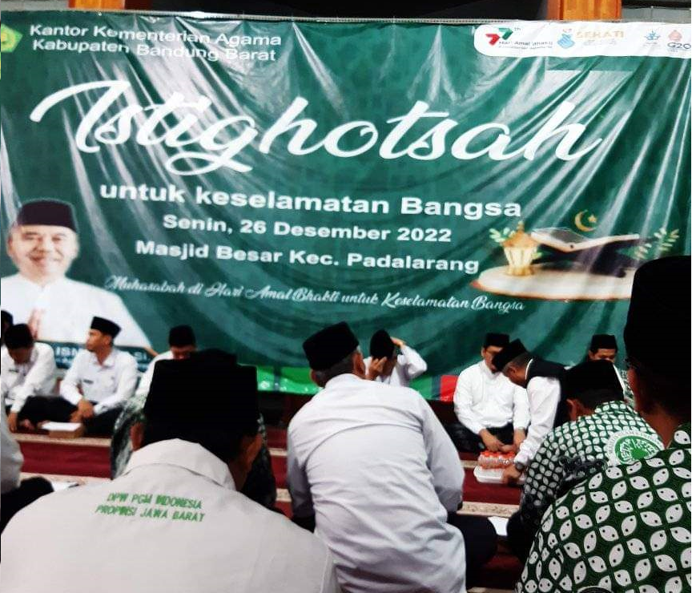

Kegiatan Istighosah
Acara ini merupakan kegiatan tahunan yang selalu diadakan oleh Majelis Ulama Indonesia (MUI) Kecamatan Saguling Kabupaten Bandung Barat. Dalam rangka Istighosah untuk keselamatan dan keberkahan masyarakat Bandung Barat dan sekaligus dalam rangka Hari Amal Bhakti Kementrian Agama yang ke-77 Tahun 2023.